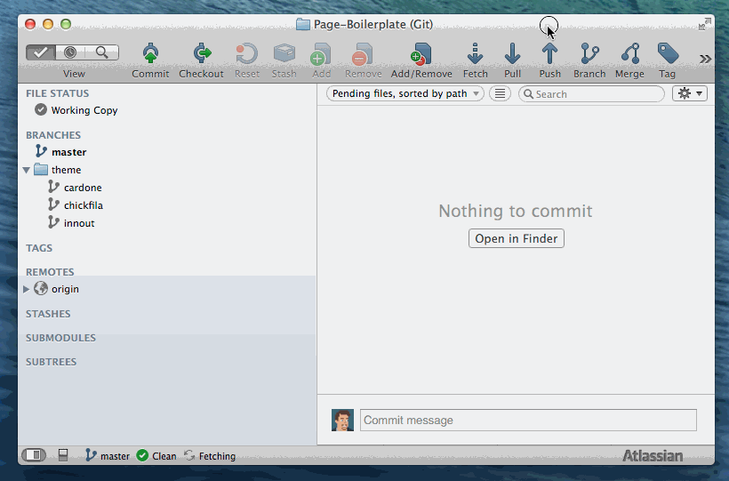
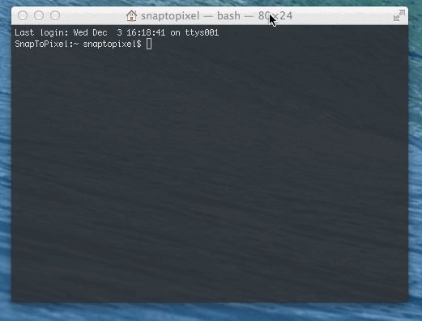
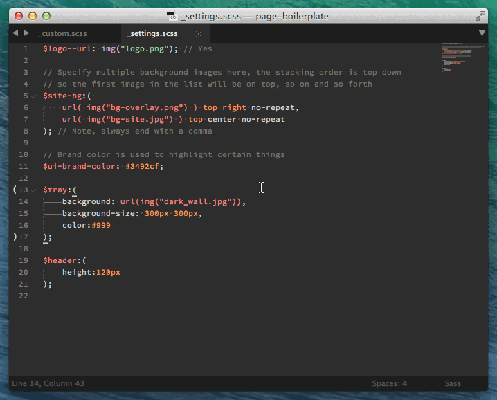

Overview
Creating a theme is a straightforward process of customizing variables, adding assets and publishing the resulting files to Amazon. Most of the work will take place locally on your machine and when complete you'll be able to easily publish and save your work in the cloud.
Prerequsites
Before proceeding through the tutorial make sure you've completed the installation instructions and the setup instructions.
Step 1 - Create a Branch
Themes are stored as "branches" in Git which allow for easy integration, updating and deployment. Once you've created your theme's branch you'll be able to work locally and "push" your changes to Github when finshed. This makes it easy to share themes with other designers and to keep a history of what's been changed by whom.
Naming Your Branch:
The name of your branch is important as it is used when publishing your theme to the web. Make sure to make it something unique yet memorable. Feel free to use LGIDs and such, but remember these should be human readable ie: theme/cardone not: theme/theme-main-12953
Creating a Branch in Sourcetree:
Click the "Branch" button and enter a name in the format theme/theme-name

Step 2 - Start Live Preview
The live preview server allows you to change theme settings and preview them locally in your web browser as you work. This creates an easy way to tweak and see your changes happen in (almost) real time.
The server is started via the default task in the Grunt configuration which you can invoke via the command line or in Sublime Text using the Grunt plugin.
Using the Command-line
Open the command line and switch to your project directory using cd or similar. Then simply type grunt which will start the server and open the boilerplate preview inside your default browser. Once you've started the server it will continue to run and watch for changes to the project files. When you want to stop the server press ctrl+c or simply close your terminal window.

Using Sublime Text
When using the Grunt plugin for Sublime Text you can simply bring up the command prompt by pressing cmd+shift+p and then typing grunt. Select the "Grunt" option in the menu and then type default and hit enter. You will see the console which shows the server starting, etc. In order to stop the server follow the process above but select "Grunt: Kill Running Tasks" instead of "Grunt".

Step 3 - Adding Images
Let's get started by downloading some images and saving them in our project. Right-click on each of these links and save them to the folder /output/images/
{kind=link}
{kind=link}
{kind=link}
{kind=link}
Step 4 - Customizing Your Theme
All customizations should be in made in the file /theme/_settings.scss which is located in your project folder.
Start Fresh
First, open and delete the contents of theme/_settings.scss
Change the logo
Copy the following code and paste into the settings file:
$logo--url: img("390_logo.png");
$header-logo: (
width: 178px,
height: 61px
);